Sage может осуществлять вычисления такие, как поиск решений уравнений, дифференциация, интегрирование и преобразования Лапласа. См. Sage Constructions , где содержатся примеры.
Функция solve решает уравнения. Для ее использования сначала нужно определить некоторые переменные; уравнение (или система уравнений) дает аргументы для solve:
sage: x = var('x')
sage: solve(x^2 + 3*x + 2, x)
[x == -2, x == -1]
Можно решать уравнения для одной переменной через другие:
sage: x, b, c = var('x b c')
sage: solve([x^2 + b*x + c == 0],x)
[x == -1/2*b - 1/2*sqrt(b^2 - 4*c), x == -1/2*b + 1/2*sqrt(b^2 - 4*c)]
Также можно решать уравнения с несколькими переменными:
sage: x, y = var('x, y')
sage: solve([x+y==6, x-y==4], x, y)
[[x == 5, y == 1]]
Следующий пример показывает, как Sage решает систему нелинейных уравнений. Для начала система решается символьно:
sage: var('x y p q')
(x, y, p, q)
sage: eq1 = p+q==9
sage: eq2 = q*y+p*x==-6
sage: eq3 = q*y^2+p*x^2==24
sage: solve([eq1,eq2,eq3,p==1],p,q,x,y)
[[p == 1, q == 8, x == -4/3*sqrt(10) - 2/3, y == 1/6*sqrt(2)*sqrt(5) - 2/3],
[p == 1, q == 8, x == 4/3*sqrt(10) - 2/3, y == -1/6*sqrt(2)*sqrt(5) - 2/3]]
Для приближенных значений решения можно использовать:
sage: solns = solve([eq1,eq2,eq3,p==1],p,q,x,y, solution_dict=True)
sage: [[s[p].n(30), s[q].n(30), s[x].n(30), s[y].n(30)] for s in solns]
[[1.0000000, 8.0000000, -4.8830369, -0.13962039],
[1.0000000, 8.0000000, 3.5497035, -1.1937129]]
(Функция n выведет приближенное значение. Аргументом для данной функции является количество битов точности)
Во многих случаях функция solve не способна найти точное решение уравнения. Вместо нее можно использовать функцию find_root для нахождения численного решения. Например, solve не возвращает ничего существенного для следующего уравнения:
sage: theta = var('theta')
sage: solve(cos(theta)==sin(theta), theta)
[sin(theta) == cos(theta)]
С другой стороны функция find_root может использоваться для решения вышеуказанного примера в интервале 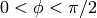:
sage: phi = var('phi')
sage: find_root(cos(phi)==sin(phi),0,pi/2)
0.785398163397448...
Sage умеет дифференциировать и интегрировать многие функции.
Например, для того, чтобы дифференциировать 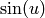 для переменной
 ,
требуется:
,
требуется:
sage: u = var('u')
sage: diff(sin(u), u)
cos(u)
Для подсчета четвертой производной функции 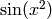 надо:
sage: diff(sin(x^2), x, 4)
16*x^4*sin(x^2) - 48*x^2*cos(x^2) - 12*sin(x^2)
Для решения частных производных, как, например, для функции 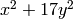 по x и y соответственно:
sage: x, y = var('x,y')
sage: f = x^2 + 17*y^2
sage: f.diff(x)
2*x
sage: f.diff(y)
34*y
Теперь решим интегралы: и определенные, и неопределенные. Например,
 и
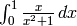
и
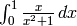
sage: integral(x*sin(x^2), x)
-1/2*cos(x^2)
sage: integral(x/(x^2+1), x, 0, 1)
1/2*log(2)
Для нахождения разложения на простые дроби для 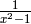 нужно сделать следующее:
sage: f = 1/((1+x)*(x-1))
sage: f.partial_fraction(x)
1/2/(x - 1) - 1/2/(x + 1)
Sage может использоваться для решения дифференциальных уравнений. Для решения уравнения 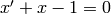 сделаем следующее:
sage: t = var('t') # define a variable t
sage: x = function('x',t) # define x to be a function of that variable
sage: DE = diff(x, t) + x - 1
sage: desolve(DE, [x,t])
(c + e^t)*e^(-t)
Для этого используется интерфейс Maxima [Max], поэтому результат может быть выведен в виде отличном от обычного вывода Sage. В данном случае общее решение для данного дифференциального уравнения - 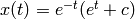.
Преобразования Лапласа также могут быть вычислены. Преобразование Лапласа для 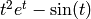 вычисляется следующим образом:
sage: s = var("s")
sage: t = var("t")
sage: f = t^2*exp(t) - sin(t)
sage: f.laplace(t,s)
2/(s - 1)^3 - 1/(s^2 + 1)
Приведем более сложный пример. Отклонение от эквилибриума для пары пружин, прикрепленных к стене слева,
|------\/\/\/\/\---|mass1|----\/\/\/\/\/----|mass2|
spring1 spring2
может быть представлено в виде дифференциальных уравнений второго порядка
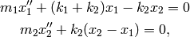
, где 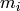 - это масса объекта i,  - это отклонение от эквилибриума массы
i, а 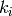
- это константа для пружины.i.
- это отклонение от эквилибриума массы
i, а 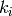
- это константа для пружины.i.
Пример: Используйте Sage для вышеуказанного примера с 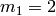, 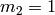, 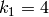, 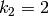, 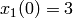, 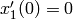, 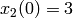, 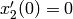.
Решение: Надо найти преобразование Лапласа первого уравнения (с условием 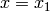, 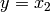):
sage: de1 = maxima("2*diff(x(t),t, 2) + 6*x(t) - 2*y(t)")
sage: lde1 = de1.laplace("t","s"); lde1
2*(-?%at('diff(x(t),t,1),t=0)+s^2*'laplace(x(t),t,s)-x(0)*s)-2*'laplace(y(t),t,s)+6*'laplace(x(t),t,s)
Данный результат тяжело читаемый, однако должен быть рассмотрен, как
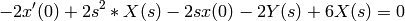
Найдем преобразование Лапласа для второго уравнения:
sage: de2 = maxima("diff(y(t),t, 2) + 2*y(t) - 2*x(t)")
sage: lde2 = de2.laplace("t","s"); lde2
-?%at('diff(y(t),t,1),t=0)+s^2*'laplace(y(t),t,s)+2*'laplace(y(t),t,s)-2*'laplace(x(t),t,s)-y(0)*s
Результат:
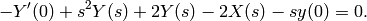
Вставим начальные условия для 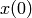, 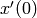, 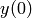 и 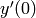 и решим уравения:
sage: var('s X Y')
(s, X, Y)
sage: eqns = [(2*s^2+6)*X-2*Y == 6*s, -2*X +(s^2+2)*Y == 3*s]
sage: solve(eqns, X,Y)
[[X == 3*(s^3 + 3*s)/(s^4 + 5*s^2 + 4),
Y == 3*(s^3 + 5*s)/(s^4 + 5*s^2 + 4)]]
Теперь найдем инверсию преобразования Лапласа для нахождения ответа:
sage: var('s t')
(s, t)
sage: inverse_laplace((3*s^3 + 9*s)/(s^4 + 5*s^2 + 4),s,t)
cos(2*t) + 2*cos(t)
sage: inverse_laplace((3*s^3 + 15*s)/(s^4 + 5*s^2 + 4),s,t)
-cos(2*t) + 4*cos(t)
Итак, ответ:
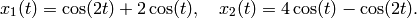
График для ответа может быть построен параметрически, используя
sage: t = var('t')
sage: P = parametric_plot((cos(2*t) + 2*cos(t), 4*cos(t) - cos(2*t) ),\
... (t, 0, 2*pi), rgbcolor=hue(0.9))
sage: show(P)
Графики могут быть построены и для отдельных компонентов:
sage: t = var('t')
sage: p1 = plot(cos(2*t) + 2*cos(t), (t,0, 2*pi), rgbcolor=hue(0.3))
sage: p2 = plot(4*cos(t) - cos(2*t), (t,0, 2*pi), rgbcolor=hue(0.6))
sage: show(p1 + p2)
Для более исчерпывающей информации по графикам см. Plotting. Также см. секцию 5.5 из [NagleEtAl2004] для углубленной информации по дифференциальным уравнениям.
В следующем примере показан метод Эйлера для дифференциальных уравнений первого и второго порядков. Сначала вспомним, что делается для уравнений первого порядка. Имея исходные данные формы

требуется найти приблизительное значение решения при
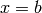 и  .
.
Из определения производной следует, что

где 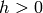 дано и является небольшим. Это и дифференциальное уравнение дают 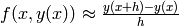. Теперь надо решить для 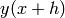:
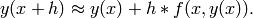
Если назвать 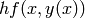 “поправочным элементом” 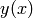 “прежним значением y“ и “новым значением y“, тогда данное приближение может быть выражено в виде
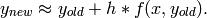
Если разбить интервал между a и b на n частей, чтобы 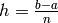, тогда можно записать информацию для данного метода в таблицу.
| 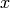 |  |
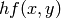 |
|---|---|---|
| 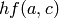 | ||
| 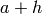 | 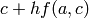 | ... |
| 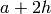 | ... | |
| ... | ||
| 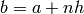 | ??? | ... |
Целью является заполнить все пустоты в таблице по одному ряду за раз до момента достижения записи ???, которая и является приближенным значением метода Эйлера для 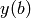.
Решение систем дифференциальных уравнений похоже на решение обычных дифференциальных уравнений.
Пример: Найдите численное приблизительное значение для 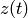 при 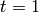, используя 4 шага метода Эйлера, где 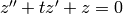, 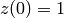, .
Требуется привести дифференциальное уравнение 2го порядка к системе двух дифференцальных уравнений первого порядка (используя , ) и применить метод Эйлера:
sage: t,x,y = PolynomialRing(RealField(10),3,"txy").gens()
sage: f = y; g = -x - y * t
sage: eulers_method_2x2(f,g, 0, 1, 0, 1/4, 1)
t x h*f(t,x,y) y h*g(t,x,y)
0 1 0.00 0 -0.25
1/4 1.0 -0.062 -0.25 -0.23
1/2 0.94 -0.12 -0.48 -0.17
3/4 0.82 -0.16 -0.66 -0.081
1 0.65 -0.18 -0.74 0.022
Итак, .
Можно построить график для точек , чтобы получить приблизительный вид кривой. Функция eulers_method_2x2_plot выполнит данную задачу; для этого надо определить функции f и g, аргумент которых имеет три координаты: (t, x, y).
sage: f = lambda z: z[2] # f(t,x,y) = y
sage: g = lambda z: -sin(z[1]) # g(t,x,y) = -sin(x)
sage: P = eulers_method_2x2_plot(f,g, 0.0, 0.75, 0.0, 0.1, 1.0)
В этот момент P содержит в себе два графика: P[0] - график x по t и P[1] - график y по t. Оба эти графика могут быть выведены следующим образом:
sage: show(P[0] + P[1])
Несколько ортогональных полиномов и специальных функций осуществлены с помощью PARI [GAP] и Maxima [Max].
sage: x = polygen(QQ, 'x')
sage: chebyshev_U(2,x)
4*x^2 - 1
sage: bessel_I(1,1,"pari",250)
0.56515910399248502720769602760986330732889962162109200948029448947925564096
sage: bessel_I(1,1)
0.565159103992485
sage: bessel_I(2,1.1,"maxima") # last few digits are random
0.16708949925104899
На данный момент Sage рассматривает данные функции только для численного применения. Для символьного использования нужно напряму использовать интерфейс Maxima, как описано ниже:
sage: maxima.eval("f:bessel_y(v, w)")
'bessel_y(v,w)'
sage: maxima.eval("diff(f,w)")
'(bessel_y(v-1,w)-bessel_y(v+1,w))/2'